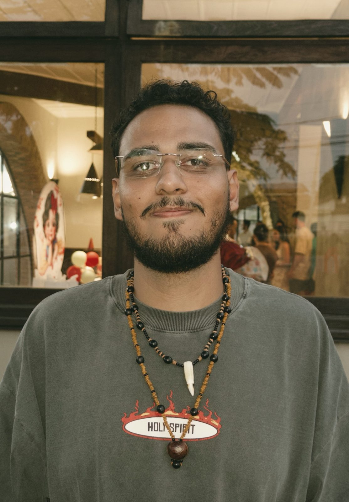
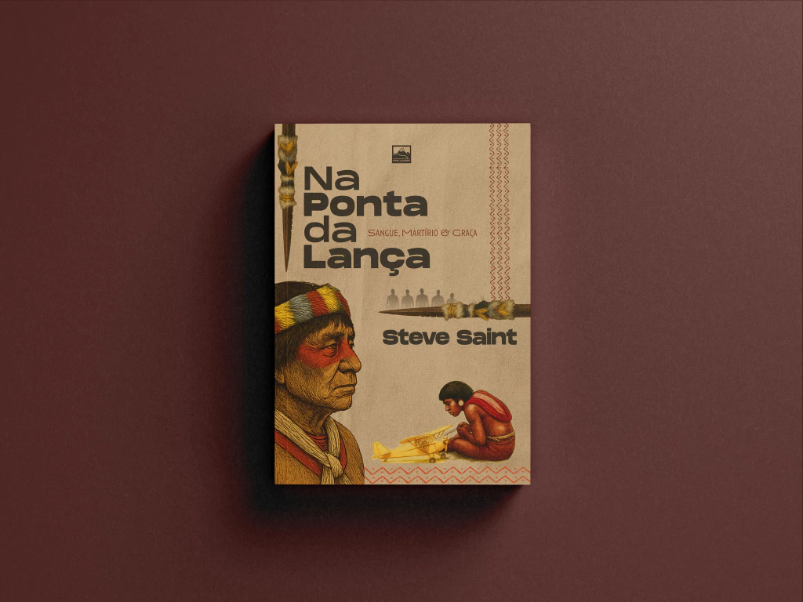
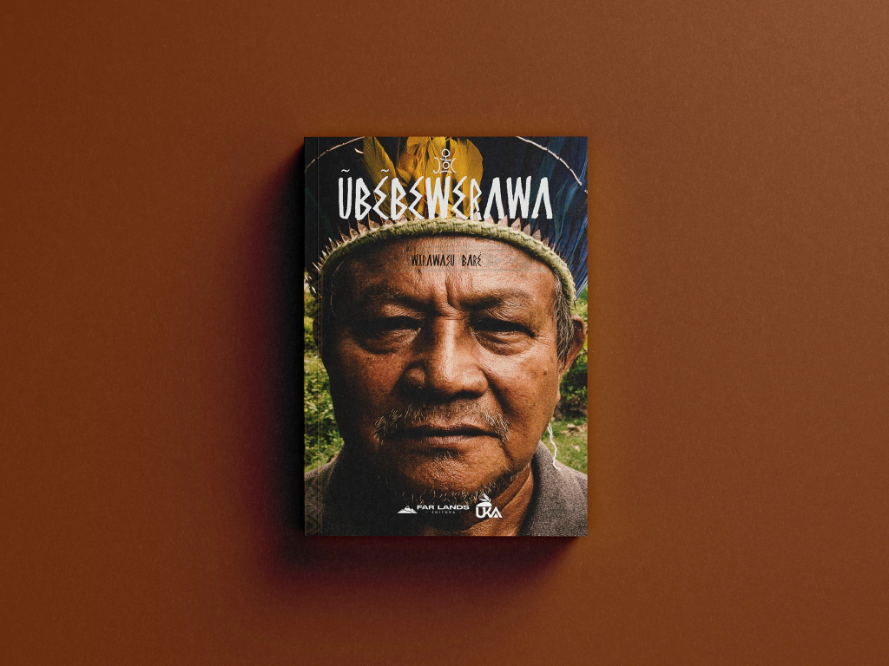
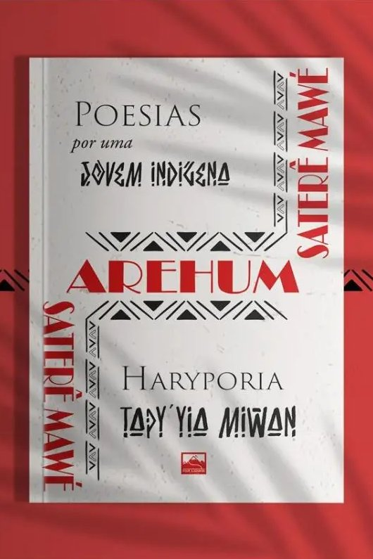
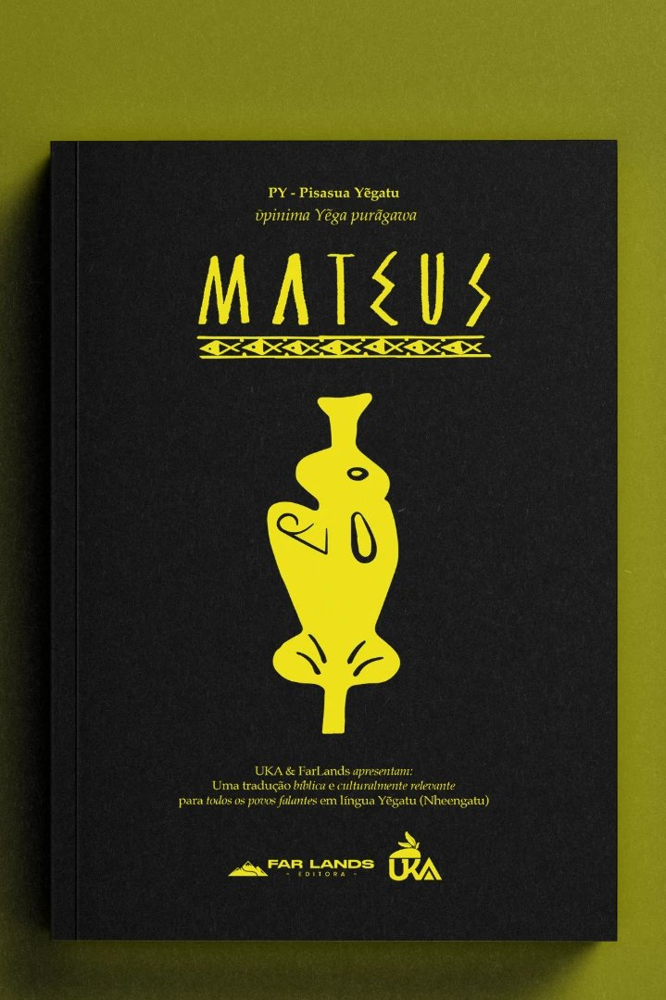
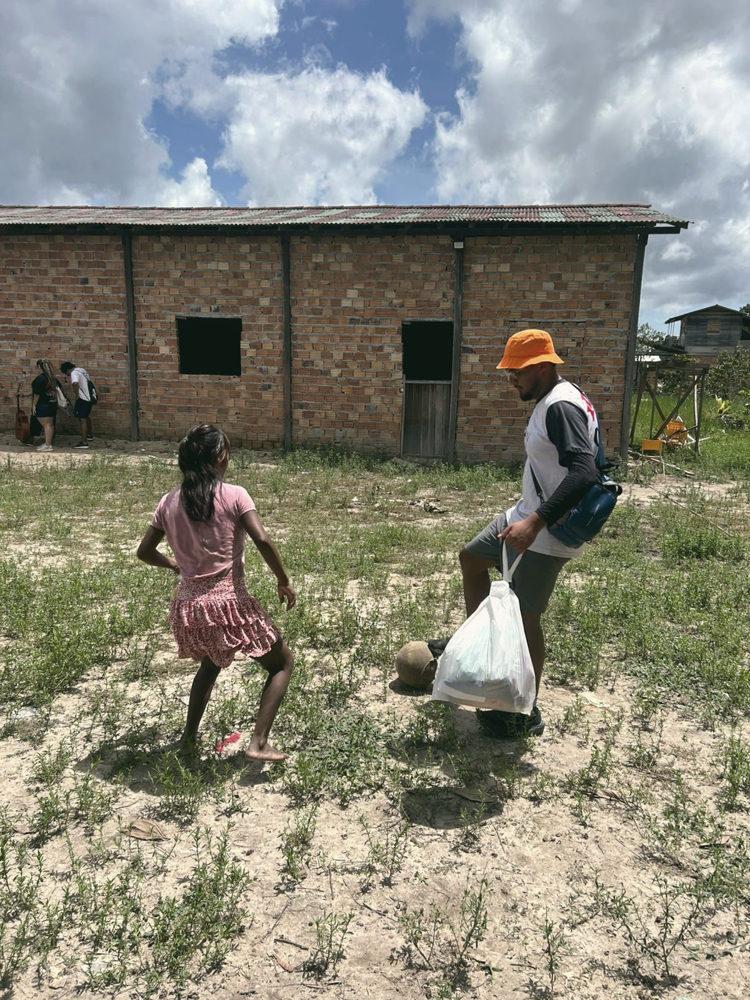

Fui alcançado por Jesus de forma inesperada, ouvindo histórias de avivamento num momento em que sequer frequentava a igreja.
A cruz é o ponto de partida de um amor que se move em direção à dor do outro.
Ruas, praças, presídios, vários estados e outros países. A fé não me permitiu ficar parado.
Foto: imagens/perfil.jpg

Quem sou eu?
Ezequiel Rocha.
Pode me chamar de Zeck, Zeca...
Missionário por vocação
Igreja local: @raravgp
Formado em Produção Multimídia
Graduando em Serviço Social
No meu processo de conversão, tive uma clareza imediata: eu precisava anunciar o amor de Deus a todos. Entendi que meu coração batia pela mesma causa de Deus: alcançar aqueles que a sociedade insiste em esquecer.
Hoje encaro minha formação acadêmica como uma arma para a missão. A Produção Multimídia e o Serviço Social têm um único objetivo: expandir o Reino. Uso essas ferramentas de forma intencional para dar voz aos esquecidos, combater a injustiça e levar esperança de maneira prática e transformadora.
Os caminhos percorridos
2
Países
da América do Sul
7
Estados
brasileiros
+10
Cidades
alcançadas
3
Territórios
indígenas
4
Povos
indígenas trabalhados diretamente
Um pouco da minha pequena caminhada
O que eu já fiz como missionário.
01
Paraguai
Trabalhei no fortalecimento da comunidade cristã local e no serviço direto a crianças e populações em situação de vulnerabilidade. Ali o meu chamado se tornou inegável: minha vida seria dedicada a alcançar os esquecidos. Essa missão foi o "sim" que abriu caminho para toda a minha jornada.
02
Palhaçaria
Através do palhaço "Zeca", encontrei uma ferramenta poderosa para comunicar a esperança de forma leve. Já levei a palhaçaria para ruas, hospitais e eventos, no Brasil e em outros países, quebrando barreiras por meio da arte e tocando o coração de crianças e adultos.
03
Projeto Agreste
Projeto de justiça e transformação social num bairro vulnerável da cidade. Com uma escolinha de futebol, atendemos 150 crianças e adolescentes com café da manhã e devocionais, além de cultos, bazares solidários, evangelismo nas ruas e visitas às famílias.
04
Sertão do Seridó
Visitei uma comunidade rural de cerca de 70 pessoas para apoiar a plantação de uma igreja. Foco no evangelismo relacional: sentar com as famílias, orar juntos e construir laços. O marco foi a entrega das "Bíblias de Taipa", adaptadas para a linguagem sertaneja.
05
Plantação Indígena
Na região amazônica, do lado brasileiro e na fronteira guianense, com a FarLands, atuei na plantação e fortalecimento de igrejas em comunidades indígenas pouco alcançadas: estudos bíblicos, cultos e trabalho com crianças, com um Evangelho fiel às Escrituras e culturalmente relevante.
06
Ilha do Marajó
Com a FarLands e a Missio Dei Marajó, servi alunos da escola local, caminhei por lixões, atuei em casas de acolhimento e fiz evangelismo de porta em porta. O amor que ensinamos só faz sentido quando desce às trincheiras mais profundas do esquecimento humano.
Galeria
Pés no campo.
A nova estação
O que eu estou fazendo agora?
Hoje sirvo como missionário pela FarLands, o solo onde minha vocação encontra a estrutura necessária para se expandir e dar frutos concretos.
01
Atuação no campo
Aldeia Guarani Mbyá
Evangelismo culturalmente relevante
Junto com a Missão Arco, estamos atuando em uma aldeia guarani na Serra do Mar, no litoral paulista. Nessa comunidade moram duas famílias. Não há energia elétrica, e muitos não falam português, apenas o guarani mbyá.
Acreditamos que a missão começa com relacionamentos. Estamos trabalhando como formiguinhas, mas o trabalho está avançando muito bem.
02
Integração missionária
Integração à Igreja Caseira
Comunidade Cristã Convergência
A igreja do Novo Testamento cresceu e se fortaleceu nos lares. As cartas paulinas saúdam "a igreja que se reúne na casa de alguém" (como Priscila e Áquila, ou Filemom). A vida comunitária em pequena escala gera o ambiente perfeito para a prestação de contas, o pastoreio mútuo e o exercício genuíno dos "uns aos outros".
Acreditamos que a missão nasce e se sustenta na comunidade, com pastoreio mútuo e discipulado orgânico.
O movimento apostólico na Igreja Primitiva não enviava ninguém ao campo sem antes consolidar princípios de vida e ministério: "transmite a homens fiéis, que sejam idôneos para também ensinarem a outros". Jesus passou três anos consolidando o DNA do Reino em Seus discípulos antes de enviá-los. O tempo de base é essencial para construir uma visão bíblica e saudável para o envio aos povos transculturais não alcançados.
Fundamentos bíblicos2 Timóteo 2:2 · Lucas 6:40
Visão bíblica
Caráter
Estudo
04
Missiologia transcultural
Produção literária em missiologia transcultural
"Escreve a visão e torna-a bem legível sobre tábuas, para que a possa ler o que correndo passa" (Hc 2:2). A produção literária registra, pereniza e multiplica o conhecimento. Lucas escreveu seu Evangelho e Atos de forma ordenada para consolidar a missão. Escrever livros em missiologia é registrar a história de Deus entre as nações e equipar a igreja que caminha.
Fundamentos bíblicosHabacuque 2:2 · Lucas 1:1-4
Pioneirismo
Artigos
Livros
05
Tradução bíblica
Princípios da tradução bíblica
I. Nheengatu II. Khéoul Guyane III. Mbyá Guarani
No Pentecostes, o Espírito Santo não exigiu que a multidão aprendesse aramaico ou grego: as maravilhas de Deus foram ouvidas "cada um na sua própria língua materna". A Grande Comissão exige que toda "nação, tribo, povo e língua" adore diante do trono. Traduzir é o ato mais profundo de contextualização: dar a um povo o direito de ouvir a Deus na língua do seu coração.
Fundamentos bíblicosApocalipse 7:9 · Atos 2:6, 11
Contextualização
Idiomas
Etnias
06
Servir a igreja
Servir a igreja local com uma visão missionária
Os ministérios foram dados por Deus para "o aperfeiçoamento dos santos, para a obra do ministério, para edificação do corpo de Cristo". A base missionária não é um fim em si mesma: ela serve à Igreja. Assim como Paulo ansiava ver os romanos para "repartir algum dom espiritual", a FarLands em Campinas servirá para encorajar e avivar a igreja local.
Fundamentos bíblicosEfésios 4:11-12 · Romanos 1:11-12
Compartilhar
Serviço
Encorajamento
07
Mobilização
Mobilizar imersões de caráter missiológico
Os apóstolos passavam pelas igrejas locais para despertá-las, coletar ofertas para os campos e pedir que elas os "encaminhassem na sua viagem" (mobilização e parceria).
Para as igrejas brasileiras, uma imersão transcultural deixa de ser um "projeto de curto prazo" e passa a ser uma escola de maturidade. Ela transforma uma igreja que apenas envia recursos em uma comunidade que sabe habitar e respeitar, gerando impacto de longo prazo onde ainda não há igrejas e missionários.
Fundamentos bíblicosAtos 1:8 · Romanos 15:24
Mobilização
Parceria
Imersão
Quer fazer parte dessa missão?
Com R$ 50 por mês, você me ajuda a alcançar quem a sociedade esqueceu.
O evangelho de forma culturalmente relevanteConheça a FarLandsClique para verClique para fechar
A missiologia da FarLands propõe uma ruptura radical com os modelos missionários colonialistas e paternalistas. Uma missiologia encarnacional, ecológica, contextual, linguística e antropológica, cujo objetivo não é ocidentalizar ninguém, mas ver florescer uma igreja genuinamente bíblica e autóctone, para que todos os povos exerçam o seu sacerdócio cultural ao Criador de tudo e todos.
Editorial FarLands
Produção evangelística & devocional.
Para a igreja brasileira e os povos indígenas
Escrita indígena
A tradução da Bíblia é o primeiro passo, mas se não ensinarmos o povo a ler e não deixarmos uma literatura teológica robusta no contexto deles, nós os condenamos a uma fé superficial. O livro é o professor que permanece quando o missionário vai embora.
Oralidade indígena
Para um povo de tradição oral, o registro em áudio é o que liberta da dependência estrangeira: um "livro falado". Gravando a Bíblia, as histórias e os cânticos na língua e no ritmo local, a igreja nativa cresce guiada pelo Espírito Santo, sem depender para sempre de um mediador.
Livros
Capa

Na Ponta da Lança
Steve Saint
Capa

Ūbēbēwerawa
WiraWasú Baré
Capa: imagens/livros/haryporia.jpg

Haryporia Tapy’yia Miwan
Arehum Saterê
Capa: imagens/livros/upinima.jpg

Ūpinima Yēga Purãgawa Mateus
Pisasua Yēgatu
Formação missiológica
Escola de Transculturalidade & Missiologia.
Uma visão fundamentada numa missiologia encarnacional, linguística, contextual e antropológica. O objetivo não é a "urbanização" ou a "ocidentalização" dos povos para que se tornem cristãos, mas o florescimento de expressões eclesiais genuinamente autóctones entre os 4 povos étnicos menos alcançados do Brasil:
Indígenas
Ciganos
Quilombolas
Sertanejos
Conscientização missionária
Iniciativa Janela Verde
Conectar o Corpo de Cristo onde a Igreja está, para construir o Corpo de Cristo onde a Igreja não está.
Um movimento missionário em direção aos povos das florestas tropicais, entre as latitudes 23,5° Norte e 23,5° Sul. Essa área abriga a maior biodiversidade do planeta e um dos maiores desafios missionários da atualidade: mais de 2.200 grupos étnicos tribais ainda não alcançados pelo evangelho.
01 · Engage
Envolver
Investir tempo e recursos para viver entre eles.
02 · Empower
Capacitar
Colocar o líder indígena no "assento do motorista".
03 · Encourage
Encorajar
Caminhar juntos em unidade, superando o individualismo no campo.
Integração missionária & tradução indígena
Base Missionária FarLands Campinas.
Um projeto fundamentado no modelo apostólico do Novo Testamento: comunhão diária (Igreja Caseira), ensino sólido (Consolidação), sabedoria registrada e compartilhada (Produção Literária), Evangelho compreensível aos povos isolados (Tradução), fortalecimento dos irmãos (Serviço à Igreja) e envio a povos não alcançados (Mobilização).
Caminhe junto
Um convite para a parceria.
A missão exige dedicação integral. Minha meta imediata é formar uma aliança com 20 parceiros que possam ofertar R$ 50 mensais.
20
Parceiros
R$50
Mensais
Para onde vai esse recurso?
O recurso será usado integralmente para alcançar as pessoas que a sociedade esquece.
Você não está apenas enviando uma oferta. Você está alcançando homens, mulheres, jovens e crianças.
Foto: imagens/parceria.jpg

O que você recebe
A nossa troca.
Nesta aliança a missão é 100% compartilhada. Sua oferta se transforma em pão e Evangelho no campo, e você caminha comigo recebendo:
01Devocionais semanais pensados a partir da realidade do campo.
02Acesso exclusivo aos bastidores, viagens e rotina de estudos.
03Conteúdo educativo, indicações de livros e notícias globais sobre a missão.
04Guias de oração estratégicos pelos povos não alcançados.